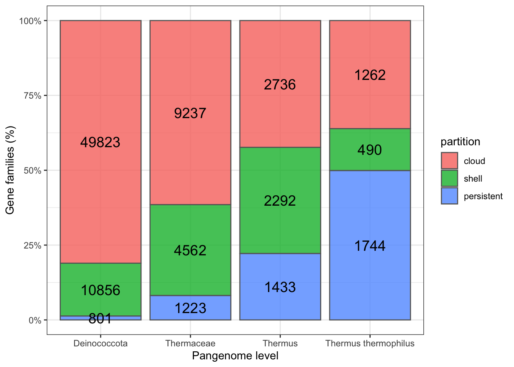
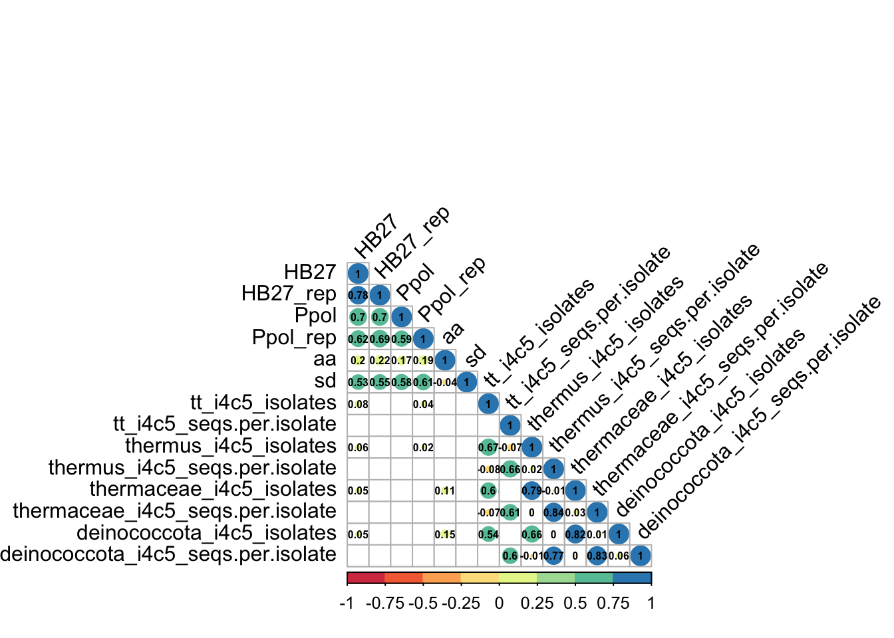
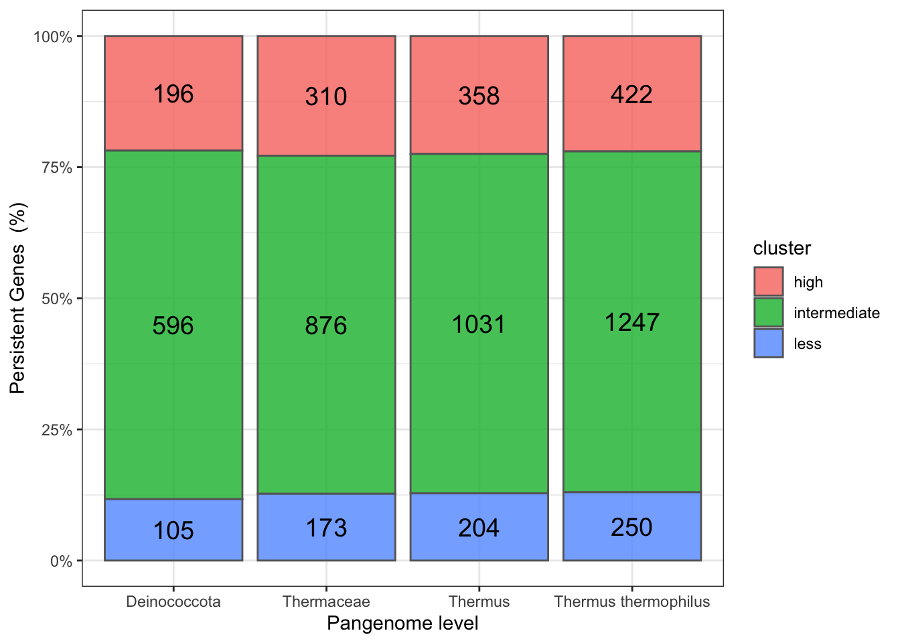
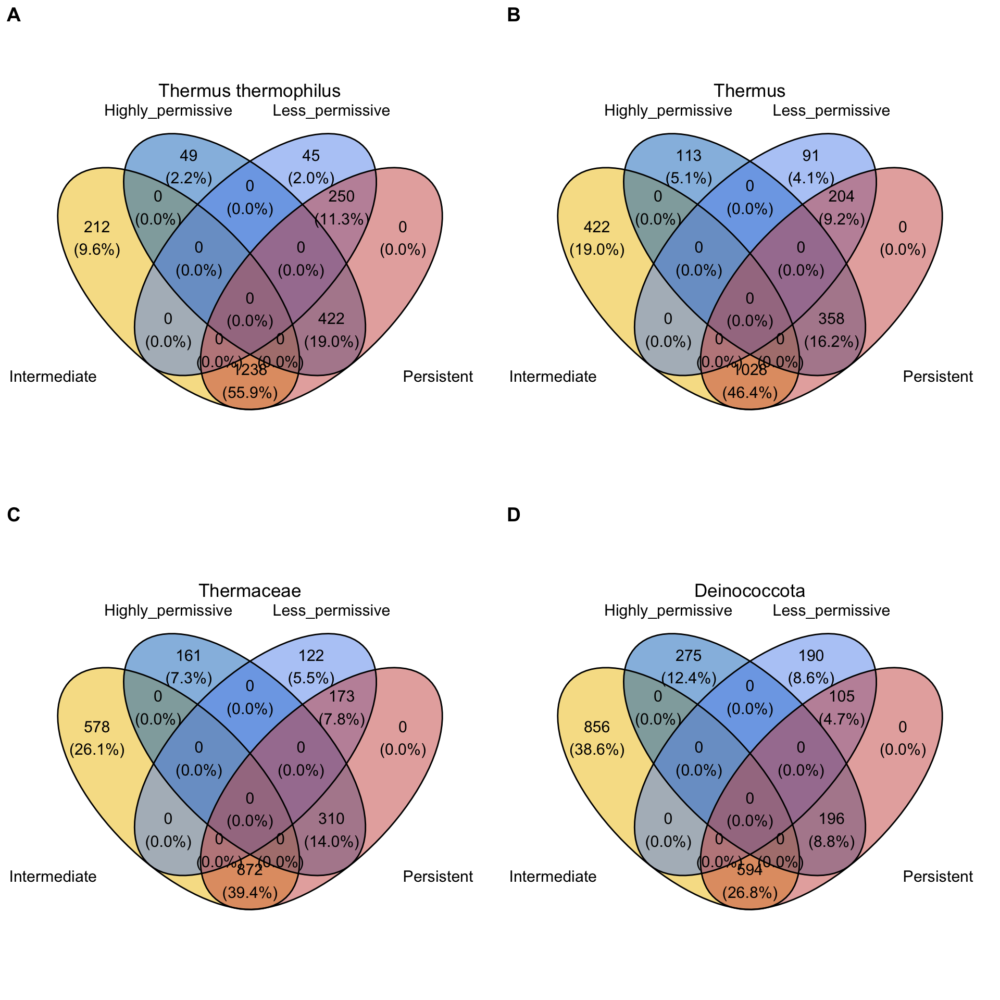
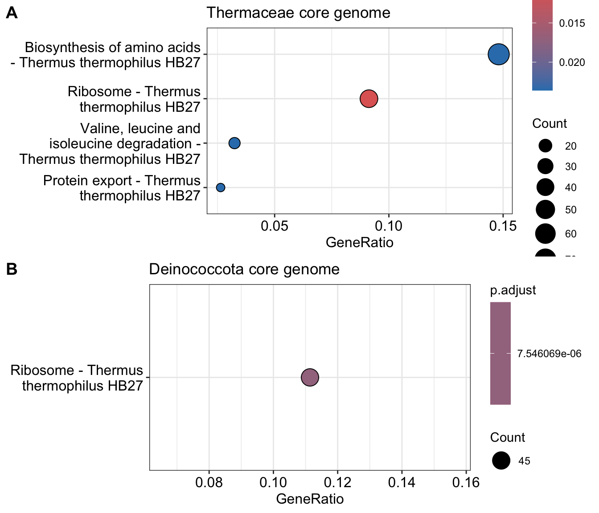
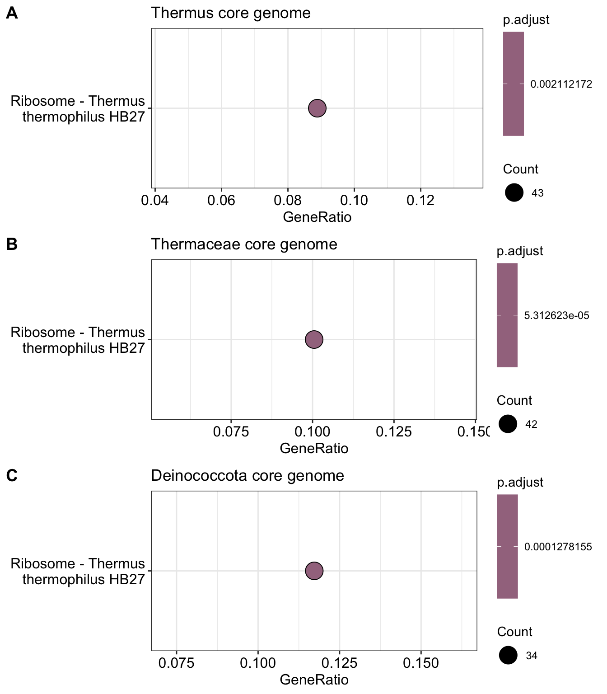

Show the code
conda activate ncbi_datasets
conda update -c conda-forge ncbi-datasets-cli
cd thermaceae/thermus_refseq
datasets download genome taxon Thermaceae --filename thermaceae_dataset.zip --exclude-atypical --assembly-source 'refseq'Modesto
Department of Biochemistry, UAM
April 26, 2024
June 24, 2024
We downloaded (May 27th, 2024) all the Phylum Deinococcota assemblies from Refseq database using the NCBI tool datasets (v.16.5.0) installed in Conda.
To obtain an index of the genome files, we converted the dataset_catalog.json to CSV (https://www.convertcsv.com/json-to-csv.htm) to obtain the file fasta.csv.
To work with homogeneous and updated genome annotations, we subsequently re-annotated all genome assemblies with Bakta (from Conda, v. 1.9.2) using the full database (DDBB v. 5.1) and the options --skip-crispr --force.
cd pangenomes/deinococcota/ncbi_dataset/data
conda activate bakta
conda update bakta
bakta_db download --output /Volumes/Trastero4/ddbb --type full
#database is in external HD
while IFS=, read -r col1 col2 col3
do
bakta --db /Volumes/Trastero4/ddbb/bakta-db --verbose --output ../../../bakta_results/$col3 --prefix $col3 --locus-tag $col3 --threads 16 $col1
done < <(tail -n +2 fasta.csv)The pangenomes were constructed with PPanGGOLIN (v. 2.0.5) installed in Conda. You can see the whole documentation about PPanGGOLIN and the output files here. In order to construct different pangenomes at species, genus, family and order levels, we parse the taxonomy from NCBI datasets using dataformat tool and then use a short R script (parse_taxonomy.R) to generate the annotated genomes table lists.
After testing different alternative datasets and clustering combinations, we empirically set the MMSeqs clustering sequence identity and coverage parameters to 0.4 and 0.5, respectively.
#STEP 2
#Run ppanggolin and write extra output files
conda activate bioconda
cd pangenomes
ppanggolin workflow --anno deinococcota.gbff.list --basename deinococcota --identity 0.4 --coverage 0.5 -o deinococcota_i4c5 -c 16 -f
ppanggolin workflow --anno thermaceae.gbff.list --basename thermaceae --identity 0.4 --coverage 0.5 -o thermaceae_i4c5 -c 16 -f
ppanggolin workflow --anno thermus.gbff.list --basename thermus --identity 0.4 --coverage 0.5 -o thermus_i4c5 -c 16 -f
ppanggolin workflow --anno tt.gbff.list --basename tthermophilus --identity 0.4 --coverage 0.5 -o tt_i4c5 -c 16 -fAdditionally, before moving forward with the pangenome, as reference, we are going to incorporate the gene names from the Thermus thermophilus strain HB27, as annotated in the NCBI Refseq assembly (GCF_000008125.1).
Now, we are going to have a look to the main pangenome stats.
pangenomes <- c("tt_i4c5","thermus_i4c5","thermaceae_i4c5","deinococcota_i4c5")
names(pangenomes) <- c("Thermus thermophilus","Thermus","Thermaceae","Deinococcota")
#stats from all metagenomes
cloud <- c()
shell <- c()
persistent <- c()
for (i in 1:length(pangenomes)){
cloud[i] <- length(read_lines(paste0("pangenomes/",pangenomes[i],"/partitions/cloud.txt")))
shell[i] <- length(read_lines(paste0("pangenomes/",pangenomes[i],"/partitions/shell.txt")))
persistent[i] <- length(read_lines(paste0("pangenomes/",pangenomes[i],"/partitions/persistent.txt")))
}
stats <- data.frame(cloud,shell,persistent)
row.names(stats) <- names(pangenomes)
stats <- cbind(row.names(stats),stack(stats))
names(stats) <- c("level","numbers","partition")
#plot
ggplot(stats,aes(x=level, y=numbers,group=partition)) +
geom_bar(aes(fill=partition),stat = "identity",position="fill",color="grey40", alpha=0.8) + ylab("Gene families (%)")+ geom_text(aes(label=numbers),size=5, position = position_fill(vjust=0.5) , col = "black")+xlab("Pangenome level") +scale_y_continuous(labels = scales::percent) + theme_bw()
The number of clusters or gene families conserved (Shell+Persistent) increases as we go down in the taxonomical level. Note that the Shell partition shrinks at the species level, suggesting that the identity threshold is probably low at this level for a detailed pangenome analysis. However, as we will focus in the Persistent partition, the calculated pangenomes would be enough informative.
As mentioned above, in order to compute the pangenomes, we carried out a new annotation of the genes in all the assemblies. This is required to have homogeneous gene definitions, but that also gives rise to some differences between the classical NCBI Genbank annotation that we used for the pangenome and the new annotations. Thus, in order to integrate the HB27 genes from TnSeq (TT_CXXXX) and pangenome genes (GCF_000008125.1_XXXXX) in the same table, we used the package fuzzyjoin that allows a flexible merge of the data, considering the gene start and stop as an interval rather than fixed coordinates. However, this flexibility also has a price, as we have some pangenome genes that matched with more than one gene in the classical annotation. We tested different levels of flexibility in the coordinates to maximize the number of genes in the table and at the same time minimize the number of duplicates.
#cross GCA_000008125.1 in all pangenomes
matrix <- list()
HB27 <- data.frame()
for (i in 1:length(pangenomes)){
matrix[[i]]<- read.table(paste0("pangenomes/",pangenomes[i],"/table/GCF_000008125.1.tsv"),header=TRUE,sep="\t")
}
HB27 <- merge(matrix[[1]][,c(1:4,8)],matrix[[2]][,c(1:4,8)],by=c("gene","contig","start","stop"),all=TRUE)
colnames(HB27)[5:6] <- pangenomes[1:2]
HB27 <- merge(HB27,matrix[[3]][,c(1:4,8)],by=c("gene","contig","start","stop"),all=TRUE)
HB27 <- merge(HB27,matrix[[4]][,c(1:4,8)],by=c("gene","contig","start","stop"),all=TRUE)
colnames(HB27)[7:8] <- pangenomes[3:4]
#cross gene names
tnseq <- read.csv2("tnSeq_full.csv")
HB27_genome <- read.table("00_raw/refs/GCA_000008125.1.gtf",sep="\t",header=FALSE)
HB27_genome$Chr <- "AE017221.1"
HB27_genome$Chr[8088:nrow(HB27_genome)] <- "AE017222.1"
HB27_genome$V9 <- substr(HB27_genome$V9,9,16)
colnames(HB27_genome)[c(4:5,9)] <- c("start","stop","Genes")
#to reduce differnces in gene annotation, we use fuzzyjoin
#we use the highest max_dist value that don't give rise to duplicate gene names
tmp <- fuzzyjoin::difference_inner_join(HB27[HB27$contig=="contig_1",],HB27_genome[HB27_genome$V3=="CDS" & HB27_genome$V1=="AE017221.1" ,c(4:5,9)], by =c("start", "stop"), max_dist = 210 )
tmp2 <- fuzzyjoin::difference_inner_join(HB27[HB27$contig=="contig_2",],HB27_genome[HB27_genome$V3=="CDS" & HB27_genome$V1=="AE017222.1" ,c(4:5,9)], by =c("start", "stop"), max_dist = 210 )
HB27_annotated <- rbind(tmp,tmp2)
#now we fetch the number of genomes with members in each family and paralogs
#load pangenome matrix
matrix <- list()
for (i in 1:length(pangenomes)){
matrix[[i]]<- read.table(paste0("pangenomes/",pangenomes[i],"/matrix.csv"),sep=",",header=TRUE)
matrix[[i]] <- matrix[[i]][,c(4,6,match("GCF_000008125.1",names(matrix[[i]])))]
colnames(matrix[[i]])[3] <- "gene"
#HB27_annotated <- merge(HB27_annotated,matrix[[i]], by="gene",all.x=TRUE)
for (j in 1:nrow(HB27_annotated)){
k <- grep(HB27_annotated$gene[j],matrix[[i]]$gene)
HB27_annotated$isolates[j] <- matrix[[i]]$No..isolates[k]
HB27_annotated$seqs[j] <- matrix[[i]]$Avg.sequences.per.isolate[k]
}
colnames(HB27_annotated)[c(length(HB27_annotated)-1,length(HB27_annotated))] <- c(paste0(pangenomes[i],"_isolates"),paste0(pangenomes[i],"_seqs.per.isolate"))
}
panTnseq <- merge(tnseq,HB27_annotated[,c(11,5:8,12:19)])
panTnseq_Full <- merge(tnseq,HB27_annotated[,c(11,5:8,12:19)],all.x=TRUE)
fwrite(panTnseq_Full,"tnseq_pangenome2275.csv",sep=";", row.names = FALSE)We have been able to match in the pangenome 2190 genes out of 2275, with only 3 genes of the newly annotated HB27 (GCF_000008125.1_07995, GCF_000008125.1_08920, and GCF_000008125.1_08925) that matched with two genes in the classical annotation (TT_CXXXX).
The final table is saved as tnseq_pangenome2275.csv and tnseq_pangenome2275.xlsx.
Now we are going to test the correlation between the TnSeq score and group classification of the HB27 genes, with the number of conserved genes in each pangenome and the pangenome cluster.
#corr
panTnseq_Full[,c(2:5,22:29)] <- lapply(panTnseq_Full[,c(2:5,22:29)], as.numeric)
M <-cor(panTnseq_Full[,c(2:5,22:29)], method = "spearman", use = "pairwise.complete.obs")
testRes <- cor.mtest(panTnseq_Full[,c(2:5,22:29)], conf.level = 0.95)
corrplot(M, type="lower", p.mat = testRes$p, method = 'circle', insig='blank',
tl.col="black",tl.srt = 45, addCoef.col ='black', number.cex = 0.5, col=brewer.pal(n=8, name="Spectral"))
There’s no overall correlation.
#recuento
high <- c()
intermediate <- c()
less <- c()
for (i in 1:length(pangenomes)){
high[i] <- nrow(subset(panTnseq,panTnseq[,17+i]=="persistent" & panTnseq$cluster=="Highly permissive" ))
intermediate[i] <- nrow(subset(panTnseq,panTnseq[,17+i]=="persistent" & panTnseq$cluster=="Intermediate" ))
less[i] <- nrow(subset(panTnseq,panTnseq[,17+i]=="persistent" & panTnseq$cluster=="Less permissive" ))
}
stats <- data.frame(high,intermediate,less)
row.names(stats) <- names(pangenomes)
stats <- cbind(row.names(stats),stack(stats))
names(stats) <- c("level","ratio","cluster")
#plot
ggplot(stats,aes(x=level, y=ratio,group=cluster)) +
geom_bar(aes(fill=cluster),stat = "identity",position="fill",color="grey40", alpha=0.8) + ylab("Persistent Genes (%)")+ geom_text(aes(label=ratio),size=5, position = position_fill(vjust=0.5) , col = "black")+xlab("Pangenome level") +scale_y_continuous(labels = scales::percent) + theme_bw()
Now, let’s see genes distribution in the different groups using Venn diagrams.
x <- list(
Intermediate = panTnseq_Full$Genes[panTnseq_Full$cluster=="Intermediate"],
Highly_permissive = panTnseq_Full$Genes[panTnseq_Full$cluster=="Highly permissive"],
Less_permissive = panTnseq_Full$Genes[panTnseq_Full$cluster=="Less permissive"],
Persistent = panTnseq_Full$Genes[panTnseq_Full$tt_i4c5=="persistent"]
)
library(ggvenn)Loading required package: gridLoading required package: scales
Attaching package: 'scales'The following object is masked from 'package:purrr':
discardThe following object is masked from 'package:readr':
col_factortt <- ggvenn(
x,
fill_color = c("#EFC000FF","#0073C2FF","cornflowerblue", "#CD534CFF"),
stroke_size = 0.5, set_name_size = 4
) + ggtitle("Thermus thermophilus") + theme(plot.title = element_text(hjust = 0.5))+
scale_x_continuous(expand = expansion(mult = c(0.15, 0.15)))
x[[4]] <- panTnseq_Full$Genes[panTnseq_Full$thermus_i4c5=="persistent"]
thermus <- ggvenn(
x,
fill_color = c("#EFC000FF","#0073C2FF","cornflowerblue", "#CD534CFF"),
stroke_size = 0.5, set_name_size = 4
) + ggtitle("Thermus") + theme(plot.title = element_text(hjust = 0.5))+
scale_x_continuous(expand = expansion(mult = c(0.15, 0.15)))
x[[4]] <- panTnseq_Full$Genes[panTnseq_Full$thermaceae_i4c5=="persistent"]
thermaceae <- ggvenn(
x,
fill_color = c("#EFC000FF","#0073C2FF","cornflowerblue", "#CD534CFF"),
stroke_size = 0.5, set_name_size = 4
) + ggtitle("Thermaceae") + theme(plot.title = element_text(hjust = 0.5))+
scale_x_continuous(expand = expansion(mult = c(0.15, 0.15)))
x[[4]] <- panTnseq_Full$Genes[panTnseq_Full$deinococcota_i4c5=="persistent"]
deinococcota <- ggvenn(
x,
fill_color = c("#EFC000FF","#0073C2FF","cornflowerblue", "#CD534CFF"),
stroke_size = 0.5, set_name_size = 4
) + ggtitle("Deinococcota") + theme(plot.title = element_text(hjust = 0.5))+
scale_x_continuous(expand = expansion(mult = c(0.15, 0.15)))
ggarrange(tt, thermus, thermaceae, deinococcota,
labels = c("A", "B","C","D"), ncol=2,nrow = 2)
Reading KEGG annotation online: "https://rest.kegg.jp/link/tth/pathway"...Reading KEGG annotation online: "https://rest.kegg.jp/list/pathway/tth"...p1 <- dotplot(kk, title="Thermaceae core genome")
kk_D <- enrichKEGG(gene = na.omit(panTnseq_Full[panTnseq_Full$cluster!="Highly permissive" & panTnseq_Full$deinococcota_i4c5=="persistent",1]),
organism = 'tth',
pvalueCutoff = 0.05)
p2 <- dotplot(kk_D, title="Deinococcota core genome")
ggarrange(p1, p2,
labels = c("A", "B"), ncol=1,nrow = 2)
Reading KEGG annotation online: "https://rest.kegg.jp/conv/uniprot/tth"...panTnseq_Full <- panTnseq_Full %>%
mutate(uni = replace(Genes, Genes %in% uniprot$kegg, uniprot$uniprot))
kk <- enrichKEGG(gene = na.omit(panTnseq_Full[panTnseq_Full$cluster!="Highly permissive" & panTnseq_Full$thermus_i4c5=="persistent",30]),
organism = 'tth', keyType = 'uniprot',
pvalueCutoff = 0.05)Reading KEGG annotation online: "https://rest.kegg.jp/conv/uniprot/tth"...p1 <- dotplot(kk, title="Thermus core genome")
kk_t <- enrichKEGG(gene = na.omit(panTnseq_Full[panTnseq_Full$cluster!="Highly permissive" & panTnseq_Full$thermaceae_i4c5=="persistent",30]),
organism = 'tth', keyType = 'uniprot',
pvalueCutoff = 0.05)
p2 <- dotplot(kk_t, title="Thermaceae core genome")
kk_D <- enrichKEGG(gene = na.omit(panTnseq_Full[panTnseq_Full$cluster!="Highly permissive" & panTnseq_Full$deinococcota_i4c5=="persistent",30]),
organism = 'tth', keyType = 'uniprot',
pvalueCutoff = 0.05)
p3 <- dotplot(kk_D, title="Deinococcota core genome")
ggarrange(p1, p2, p3,
labels = c("A", "B", "C"), ncol=1,nrow = 3)
R version 4.4.0 (2024-04-24)
Platform: x86_64-apple-darwin20
Running under: macOS Sonoma 14.5
Matrix products: default
BLAS: /Library/Frameworks/R.framework/Versions/4.4-x86_64/Resources/lib/libRblas.0.dylib
LAPACK: /Library/Frameworks/R.framework/Versions/4.4-x86_64/Resources/lib/libRlapack.dylib; LAPACK version 3.12.0
locale:
[1] en_US.UTF-8/en_US.UTF-8/en_US.UTF-8/C/en_US.UTF-8/en_US.UTF-8
time zone: Europe/Madrid
tzcode source: internal
attached base packages:
[1] grid stats graphics grDevices utils datasets methods
[8] base
other attached packages:
[1] ggvenn_0.1.10 scales_1.3.0 ggpubr_0.6.0
[4] clusterProfiler_4.12.0 RColorBrewer_1.1-3 corrplot_0.92
[7] ggstats_0.6.0 patchwork_1.2.0 lubridate_1.9.3
[10] forcats_1.0.0 stringr_1.5.1 purrr_1.0.2
[13] readr_2.1.5 tidyr_1.3.1 tibble_3.2.1
[16] tidyverse_2.0.0 dplyr_1.1.4 DT_0.33
[19] data.table_1.15.4 ggplot2_3.5.1 formatR_1.14
[22] knitr_1.47
loaded via a namespace (and not attached):
[1] rstudioapi_0.16.0 jsonlite_1.8.8 magrittr_2.0.3
[4] farver_2.1.2 rmarkdown_2.27 fs_1.6.4
[7] zlibbioc_1.50.0 vctrs_0.6.5 memoise_2.0.1
[10] ggtree_3.12.0 rstatix_0.7.2 htmltools_0.5.8.1
[13] broom_1.0.6 gridGraphics_0.5-1 htmlwidgets_1.6.4
[16] plyr_1.8.9 cachem_1.1.0 igraph_2.0.3
[19] lifecycle_1.0.4 pkgconfig_2.0.3 fuzzyjoin_0.1.6
[22] Matrix_1.7-0 R6_2.5.1 fastmap_1.2.0
[25] gson_0.1.0 GenomeInfoDbData_1.2.12 digest_0.6.35
[28] aplot_0.2.3 enrichplot_1.24.0 colorspace_2.1-0
[31] AnnotationDbi_1.66.0 S4Vectors_0.42.0 RSQLite_2.3.7
[34] labeling_0.4.3 fansi_1.0.6 timechange_0.3.0
[37] abind_1.4-5 httr_1.4.7 polyclip_1.10-6
[40] compiler_4.4.0 bit64_4.0.5 withr_3.0.0
[43] backports_1.5.0 BiocParallel_1.38.0 carData_3.0-5
[46] viridis_0.6.5 DBI_1.2.3 ggforce_0.4.2
[49] ggsignif_0.6.4 MASS_7.3-61 HDO.db_0.99.1
[52] tools_4.4.0 ape_5.8 scatterpie_0.2.3
[55] glue_1.7.0 nlme_3.1-165 GOSemSim_2.30.0
[58] shadowtext_0.1.3 reshape2_1.4.4 fgsea_1.30.0
[61] generics_0.1.3 gtable_0.3.5 tzdb_0.4.0
[64] hms_1.1.3 car_3.1-2 tidygraph_1.3.1
[67] utf8_1.2.4 XVector_0.44.0 BiocGenerics_0.50.0
[70] ggrepel_0.9.5 pillar_1.9.0 vroom_1.6.5
[73] yulab.utils_0.1.4 splines_4.4.0 tweenr_2.0.3
[76] treeio_1.28.0 lattice_0.22-6 bit_4.0.5
[79] tidyselect_1.2.1 GO.db_3.19.1 Biostrings_2.72.1
[82] gridExtra_2.3 IRanges_2.38.0 stats4_4.4.0
[85] xfun_0.45 graphlayouts_1.1.1 Biobase_2.64.0
[88] stringi_1.8.4 UCSC.utils_1.0.0 lazyeval_0.2.2
[91] ggfun_0.1.5 yaml_2.3.8 evaluate_0.24.0
[94] codetools_0.2-20 ggraph_2.2.1 qvalue_2.36.0
[97] ggplotify_0.1.2 cli_3.6.2 munsell_0.5.1
[100] Rcpp_1.0.12 GenomeInfoDb_1.40.1 png_0.1-8
[103] parallel_4.4.0 blob_1.2.4 DOSE_3.30.1
[106] viridisLite_0.4.2 tidytree_0.4.6 crayon_1.5.2
[109] rlang_1.1.4 cowplot_1.1.3 fastmatch_1.1-4
[112] KEGGREST_1.44.0